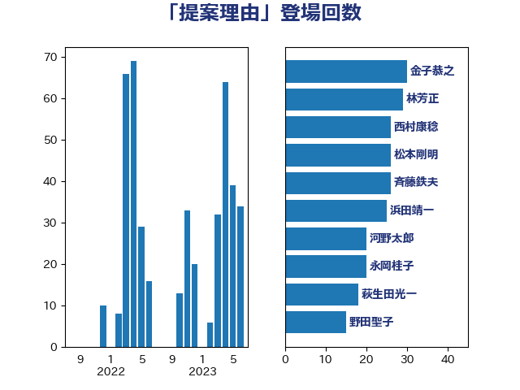

単語「提案理由」

| 金子恭之 | 自由民主党 | 30 回 |
| 林芳正 | 自由民主党 | 29 回 |
| 西村康稔 | 自由民主党 | 26 回 |
| 松本剛明 | 自由民主党 | 26 回 |
| 斉藤鉄夫 | 公明党 | 26 回 |
| 浜田靖一 | 自由民主党 | 25 回 |
| 河野太郎 | 自由民主党 | 20 回 |
| 永岡桂子 | 自由民主党 | 20 回 |
| 萩生田光一 | 自由民主党 | 18 回 |
| 野田聖子 | 自由民主党 | 15 回 |
| 末松信介 | 自由民主党 | 12 回 |
| 岡田直樹 | 自由民主党 | 12 回 |
| 寺田稔 | 自由民主党 | 12 回 |
| 三ッ林裕巳 | 自由民主党 | 10 回 |
| 鈴木俊一 | 自由民主党 | 8 回 |
| 西銘恒三郎 | 自由民主党 | 8 回 |
| 小倉將信 | 自由民主党 | 8 回 |
| 谷公一 | 自由民主党 | 4 回 |
| 若宮健嗣 | 自由民主党 | 4 回 |
| 牧島かれん | 自由民主党 | 4 回 |
| 渡辺博道 | 自由民主党 | 4 回 |
| 橋本岳 | 自由民主党 | 4 回 |
| 新藤義孝 | 自由民主党 | 4 回 |
| 高市早苗 | 自由民主党 | 3 回 |
| 岡本あき子 | 立憲民主党 | 3 回 |
| 中島克仁 | 立憲民主党 | 3 回 |
| 阿部司 | 日本維新の会 | 2 回 |
| 道下大樹 | 立憲民主党 | 2 回 |
| 赤池誠章 | 自由民主党 | 2 回 |
| 西村智奈美 | 立憲民主党 | 2 回 |
| 石井浩郎 | 自由民主党 | 2 回 |
| 泉健太 | 立憲民主党 | 2 回 |
| 柚木道義 | 立憲民主党 | 2 回 |
| 早稲田ゆき | 立憲民主党 | 2 回 |
| 斎藤アレックス | 国民民主党 | 2 回 |
| 後藤茂之 | 自由民主党 | 2 回 |
| 小林鷹之 | 自由民主党 | 2 回 |
| 宮本徹 | 日本共産党 | 2 回 |
| 吉田はるみ | 立憲民主党 | 2 回 |
| 一谷勇一郎 | 日本維新の会 | 2 回 |
| 齋藤健 | 自由民主党 | 1 回 |
| 青柳陽一郎 | 立憲民主党 | 1 回 |
| 長浜博行 | 無所属 | 1 回 |
| 鎌田さゆり | 立憲民主党 | 1 回 |
| 鈴木貴子 | 自由民主党 | 1 回 |
| 金村龍那 | 日本維新の会 | 1 回 |
| 金子恵美 | 立憲民主党 | 1 回 |
| 野村哲郎 | 自由民主党 | 1 回 |
| 進藤金日子 | 自由民主党 | 1 回 |
| 赤羽一嘉 | 公明党 | 1 回 |
| 舟山康江 | 国民民主党 | 1 回 |
| 紙智子 | 日本共産党 | 1 回 |
| 竹谷とし子 | 公明党 | 1 回 |
| 礒崎哲史 | 国民民主党 | 1 回 |
| 石橋通宏 | 立憲民主党 | 1 回 |
| 石垣のりこ | 立憲民主党 | 1 回 |
| 田村智子 | 日本共産党 | 1 回 |
| 牧山ひろえ | 立憲民主党 | 1 回 |
| 滝沢求 | 自由民主党 | 1 回 |
| 水野素子 | 立憲民主党 | 1 回 |
| 梶原大介 | 自由民主党 | 1 回 |
| 本村伸子 | 日本共産党 | 1 回 |
| 徳永久志 | 無所属 | 1 回 |
| 山田勝彦 | 立憲民主党 | 1 回 |
| 山岸一生 | 立憲民主党 | 1 回 |
| 宮本岳志 | 日本共産党 | 1 回 |
| 塩川鉄也 | 日本共産党 | 1 回 |
| 吉良よし子 | 日本共産党 | 1 回 |
| 古川元久 | 国民民主党 | 1 回 |
| 加藤勝信 | 自由民主党 | 1 回 |
| 前原誠司 | 国民民主党 | 1 回 |
| 中田宏 | 自由民主党 | 1 回 |
| 下野六太 | 公明党 | 1 回 |
| 上野通子 | 自由民主党 | 1 回 |
| 上月良祐 | 自由民主党 | 1 回 |